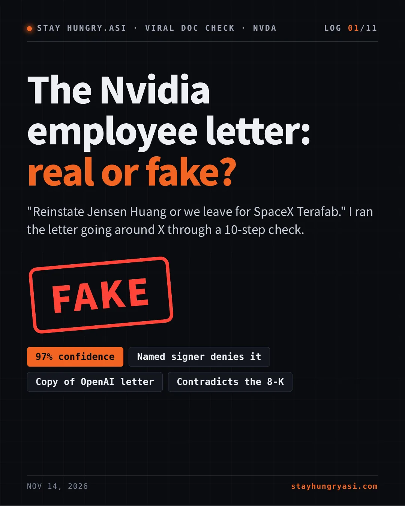
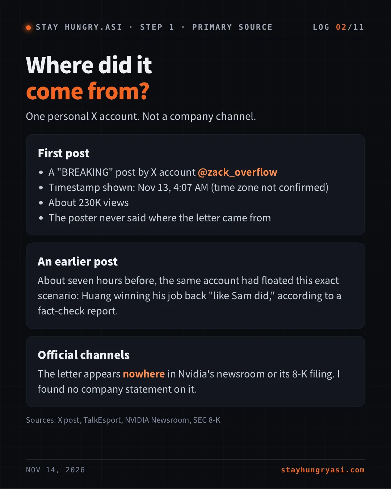
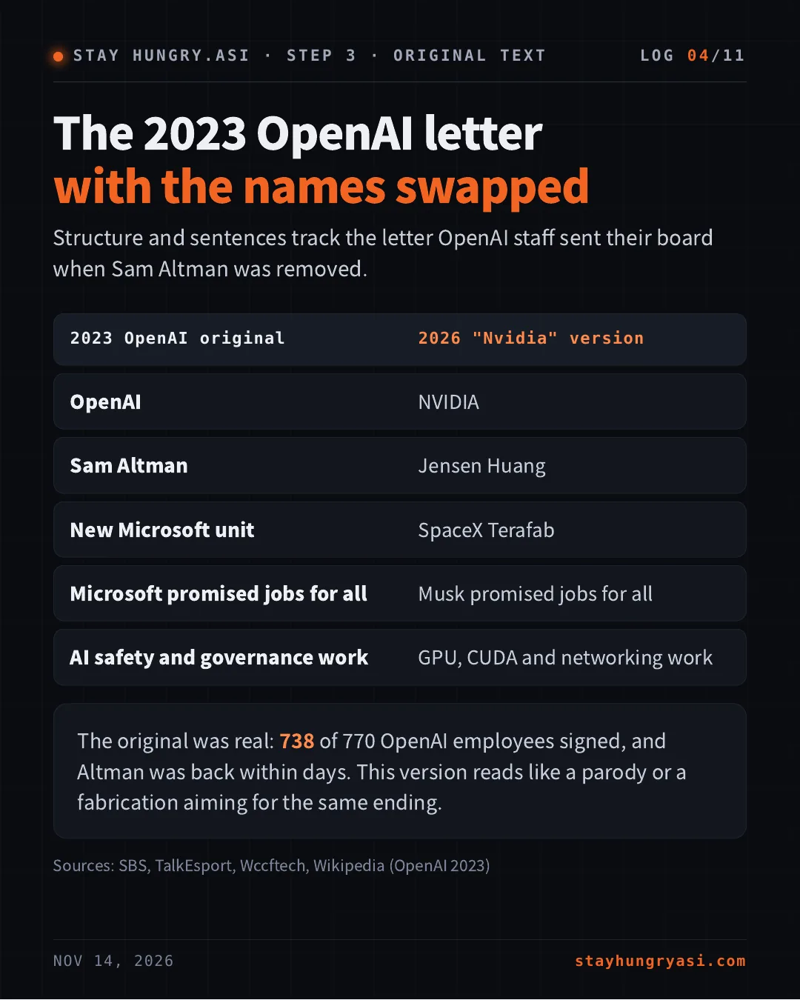
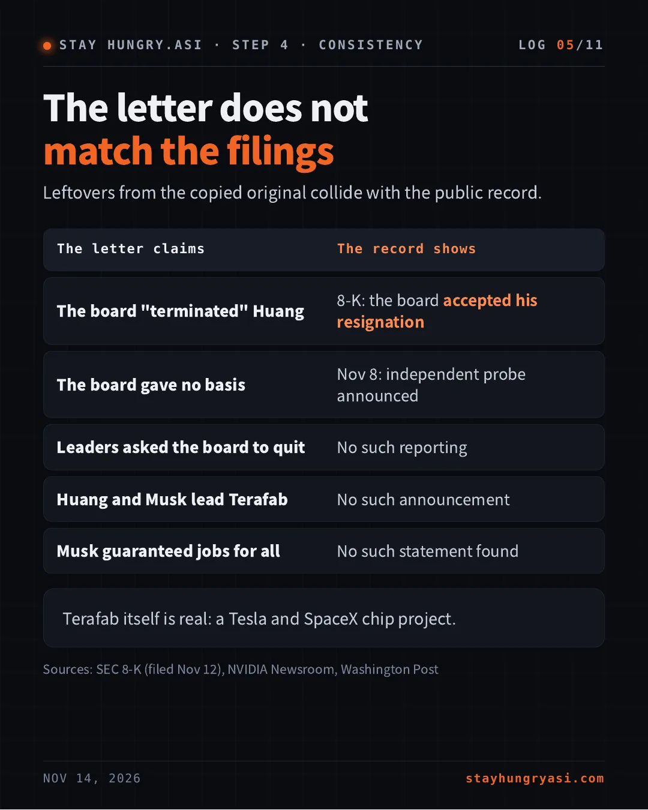
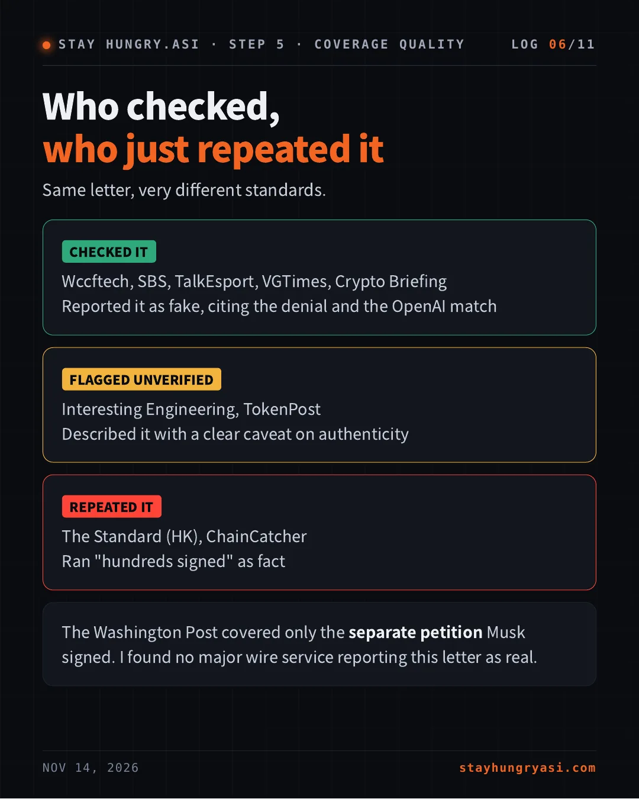
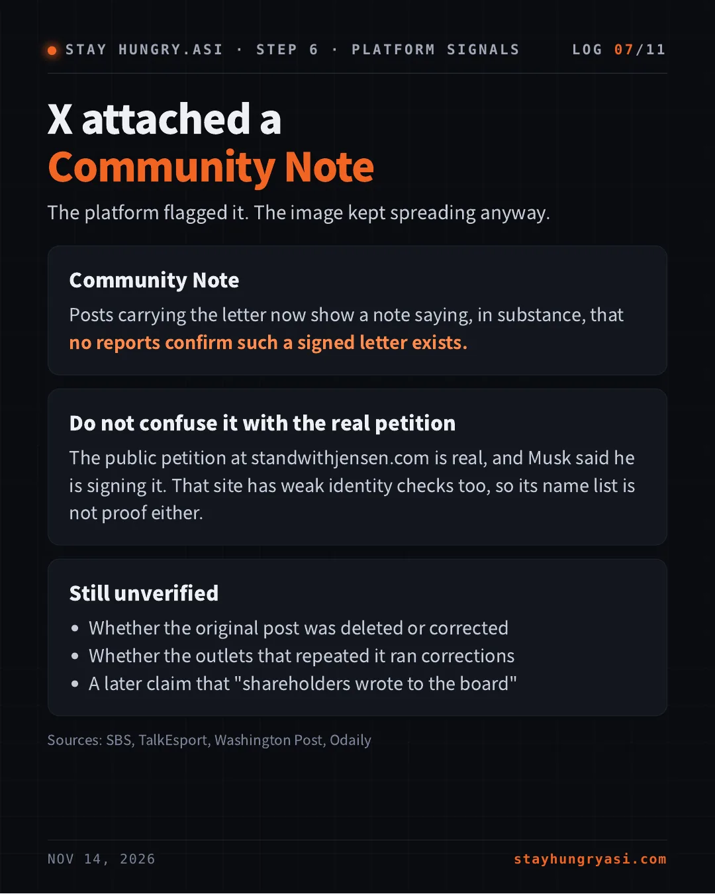
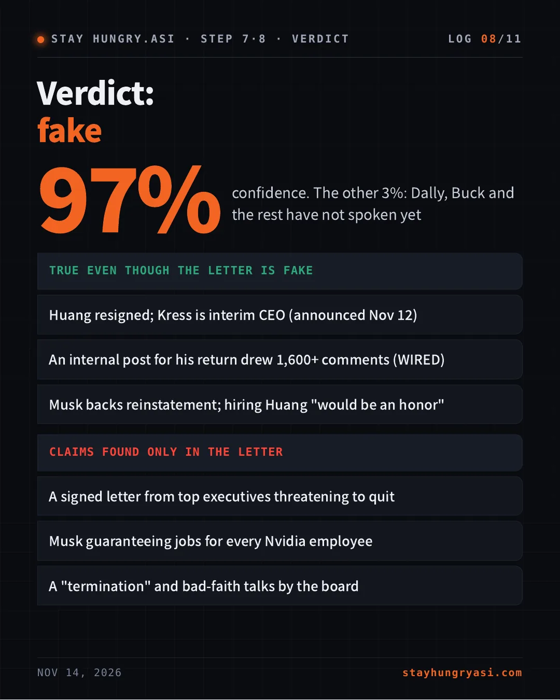
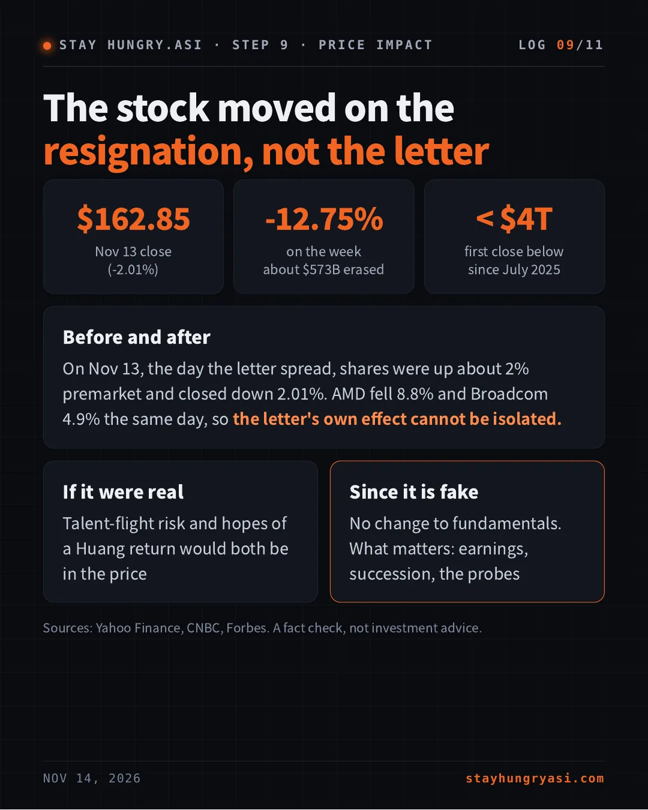
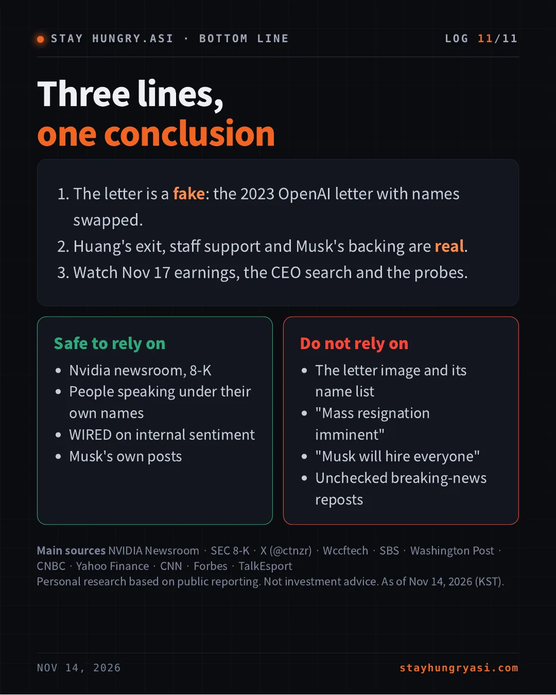

Data as of November 14, 2026 (Korea time), US close of Nov 13 · stayhungryasi.com
Conventions: figures and statements are facts as reported by the sources. The '97% confidence' is the author's subjective judgment. Items that could not be confirmed are marked as not found or unverified. A recheck at 22:00 on Nov 14 (Korea time) found no public statement from any listed name other than Catanzaro. Not investment advice.
In 11 cards
The key points in 11 cards. Tap an image to enlarge it.




















Where did it come from?
One personal X account. Not a company channel.
First post
- A "BREAKING" post by X account @zack_overflow
- Timestamp shown: Nov 13, 4:07 AM (time zone not confirmed)
- About 230K views
- The poster never said where the letter came from
An earlier post
About seven hours before, the same account had floated this exact scenario: Huang winning his job back "like Sam did," according to a fact-check report.
Official channels
The letter appears nowhere in Nvidia's newsroom or its 8-K filing. I found no company statement on it.
Sources: X post, TalkEsport, NVIDIA Newsroom, SEC 8-K
What do the "signers" say?
Of the six names visible in the image, one has spoken. He denied it.
| Listed as signer | Public position |
|---|---|
| Bryan Catanzaro (VP) | [DENIES] Did not sign |
| Bill Dally (Chief Scientist) | [SILENT] |
| Ian Buck (Accel. Computing) | [SILENT] |
| Michael Kagan (CTO) | [NOT FOUND] |
| Tim Costa | [NOT FOUND] |
| Chris Malachowsky (Co-founder) | [NOT FOUND] |
| Elon Musk (the "guarantor") | [SEPARATE] Other petition |
Catanzaro called the letter "obviously fake" on X and voiced support for interim CEO Colette Kress. Sources: X (@ctnzr), Wccftech, VGTimes, SBS
The 2023 OpenAI letter with the names swapped
Structure and sentences track the letter OpenAI staff sent their board when Sam Altman was removed.
| 2023 OpenAI original | 2026 "Nvidia" version |
|---|---|
| OpenAI | NVIDIA |
| Sam Altman | Jensen Huang |
| New Microsoft unit | SpaceX Terafab |
| Microsoft promised jobs for all | Musk promised jobs for all |
| AI safety and governance work | GPU, CUDA and networking work |
The original was real: 738 of 770 OpenAI employees signed, and Altman was back within days. This version reads like a parody or a fabrication aiming for the same ending.
Sources: SBS, TalkEsport, Wccftech, Wikipedia (OpenAI 2023)
The letter does not match the filings
Leftovers from the copied original collide with the public record.
| The letter claims | The record shows |
|---|---|
| The board "terminated" Huang | 8-K: the board accepted his resignation |
| The board gave no basis | Nov 8: independent probe announced |
| Leaders asked the board to quit | No such reporting |
| Huang and Musk lead Terafab | No such announcement |
| Musk guaranteed jobs for all | No such statement found |
Terafab itself is real: a Tesla and SpaceX chip project.
Sources: SEC 8-K (filed Nov 12), NVIDIA Newsroom, Washington Post
Who checked, who just repeated it
Same letter, very different standards.
[CHECKED IT]
Wccftech, SBS, TalkEsport, VGTimes, Crypto Briefing
Reported it as fake, citing the denial and the OpenAI match
[FLAGGED UNVERIFIED]
Interesting Engineering, TokenPost
Described it with a clear caveat on authenticity
[REPEATED IT]
The Standard (HK), ChainCatcher
Ran "hundreds signed" as fact
The Washington Post covered only the separate petition Musk signed. I found no major wire service reporting this letter as real.
X attached a Community Note
The platform flagged it. The image kept spreading anyway.
Community Note
Posts carrying the letter now show a note saying, in substance, that no reports confirm such a signed letter exists.
Do not confuse it with the real petition
The public petition at standwithjensen.com is real, and Musk said he is signing it. That site has weak identity checks too, so its name list is not proof either.
Still unverified
- Whether the original post was deleted or corrected
- Whether the outlets that repeated it ran corrections
- A later claim that "shareholders wrote to the board"
Sources: SBS, TalkEsport, Washington Post, Odaily
Verdict: fake
97% confidence. The other 3%: Dally, Buck and the rest have not spoken yet
| TRUE EVEN THOUGH THE LETTER IS FAKE |
|---|
| Huang resigned; Kress is interim CEO (announced Nov 12) |
| An internal post for his return drew 1,600+ comments (WIRED) |
| Musk backs reinstatement; hiring Huang "would be an honor" |
| CLAIMS FOUND ONLY IN THE LETTER |
|---|
| A signed letter from top executives threatening to quit |
| Musk guaranteeing jobs for every Nvidia employee |
| A "termination" and bad-faith talks by the board |
The stock moved on the resignation, not the letter
- $162.85: Nov 13 close (-2.01%)
- -12.75%: on the week about $573B erased
- < $4T: first close below since July 2025
Before and after
On Nov 13, the day the letter spread, shares were up about 2% premarket and closed down 2.01%. AMD fell 8.8% and Broadcom 4.9% the same day, so the letter's own effect cannot be isolated.
If it were real
Talent-flight risk and hopes of a Huang return would both be in the price
Since it is fake
No change to fundamentals. What matters: earnings, succession, the probes
Sources: Yahoo Finance, CNBC, Forbes. A fact check, not investment advice.
Dates that could change the verdict or the stock
| When | Event |
|---|---|
| Nov 17 | Q3 earnings; first call led by interim CEO Kress |
| Dec 1 | Three House committees seek a closed-door interview with Huang |
| TBD | Permanent CEO named (internal and external candidates) |
| TBD | Findings of the board's independent investigation |
| Any time | Statements from Dally, Buck and other listed names |
| Any time | 8-K filings on senior departures |
If another listed signer says "I signed it," or the company confirms receiving the letter, the verdict flips. So far there is no such signal.
Sources: Yahoo Finance, CNN, NVIDIA Newsroom, CNBC
Three lines, one conclusion
- The letter is a fake: the 2023 OpenAI letter with names swapped.
- Huang's exit, staff support and Musk's backing are real.
- Watch Nov 17 earnings, the CEO search and the probes.
Safe to rely on
- Nvidia newsroom, 8-K
- People speaking under their own names
- WIRED on internal sentiment
- Musk's own posts
Do not rely on
- The letter image and its name list
- "Mass resignation imminent"
- "Musk will hire everyone"
- Unchecked breaking-news reposts
Main sources NVIDIA Newsroom · SEC 8-K · X (@ctnzr) · Wccftech · SBS · Washington Post · CNBC · Yahoo Finance · CNN · Forbes · TalkEsport
Personal research based on public reporting. Not investment advice. As of Nov 14, 2026 (KST).
Sources
- NVIDIA Newsroom: NVIDIA Announces CEO Transition
- SEC: NVIDIA Form 8-K (filed Nov 12, 2026)
- X: Bryan Catanzaro (@ctnzr)
- X: the first post carrying the letter (@zack_overflow)
- TalkEsport: fact check against the 2023 OpenAI letter
- SBS: Fake Letter Turns Nvidia Upside Down
- Wccftech: NVIDIA VP says the letter is fake
- VGTimes: NVIDIA VP calls the letter fake
- Crypto Briefing: Catanzaro denies the letter
- TokenPost: VP calls the reinstatement letter fake
- The Standard (HK): report repeating the letter
- ChainCatcher: report repeating the letter
- Washington Post: Musk joins calls for Huang to be reinstated
- Forbes: AI and chip stocks finish down on Friday
- CNBC: Nvidia closes below $4 trillion
- Yahoo Finance: Nvidia's week of chaos, explained
- CNN: Huang summoned to testify before Congress